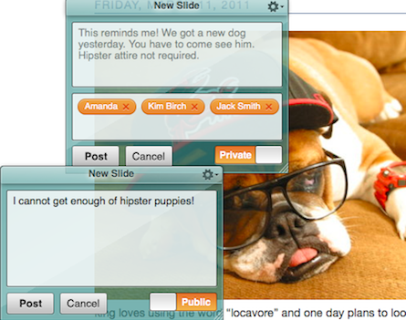
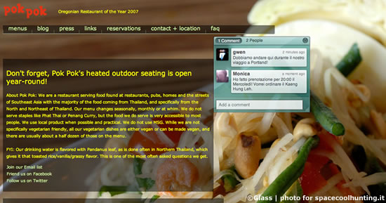
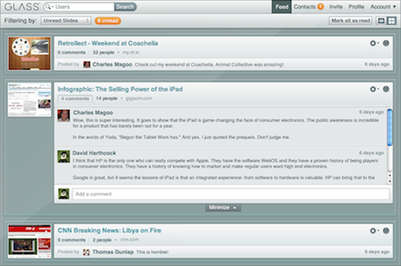

This image shows the composition views for Glass' private and public slides. The service allowed the user to post messages to their entire contact list, or just to a few select friends.

This is a posted private slide. It's position is anchored on the page, so a user could place a slide next to a particularly important paragraph and have their conversation next to the relevant content. Or, you know, talk about patio seating.

In it's default state, the feed showed a preview of the page a slide was left on, the original comment, and the most recent comment. Clicking a feed item expanded the thread and revealed a comment field. We designed this with active threads in mind, where users were familiar with the page's content and didn't need to visit it again in order to participate. We found the preview was a useful prompt to help jog the user's memory.
Glass was a social link sharing and bookmarking community community. It was shuttered in 2012, but has recently been resurrected in what appears to be a general maintenance mode. The iOS app is gone, and there are some new bugs since its return, but you can get a general feel of the service by visiting their homepage.. There's also an old quickstart video that shows off the basic concept.
Glass allowed users to bring up an overlay on top of any site and leave messages or annotations for themselves and other users. This was my first time working on a social project, and it had a focus on private and semi-private, intimate interactions. We eventually expanded the feature set to support public slides that were shared with all of a users friends, and supported re-sharing. I tend to think of Potluck and Reading as services that carry on Glass' torch.